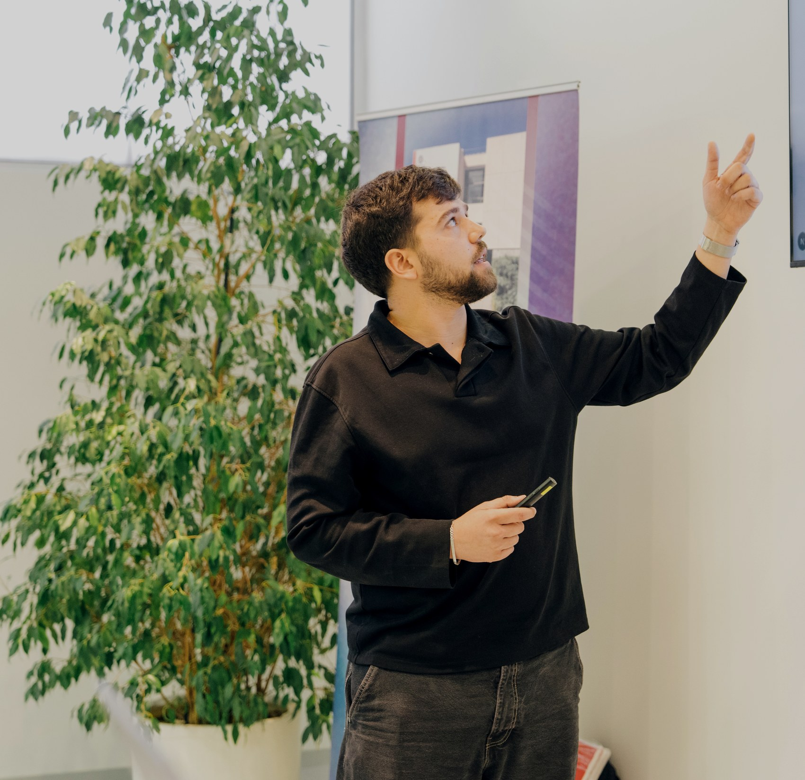

Proyecto personal destacado
AIDraft
Generador de borradores academicos desde PDF, Word o texto con seleccion de plantillas, edicion guiada y exportacion a Word.
Tecnologias

Desarrollo Web | Granada
Portfolio en construccion con foco en desarrollo web, proyectos practicos y aprendizaje continuo.
Sobre mi

Soy estudiante de DAW en Granada y estoy orientando mi perfil hacia desarrollo web full-stack. Trabajo con interfaces, logica de servidor, bases de datos y despliegues sencillos.
Vengo de una trayectoria comercial y de atencion al cliente, asi que cuido la comunicacion, la claridad del producto y la resolucion practica de problemas.
Trabajo destacado
Una seleccion de proyectos personales y trabajos practicos donde combino interfaz, automatizacion y desarrollo web.
Proyecto personal destacado
Generador de borradores academicos desde PDF, Word o texto con seleccion de plantillas, edicion guiada y exportacion a Word.
Tecnologias